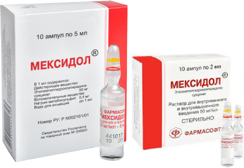
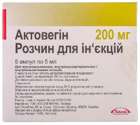
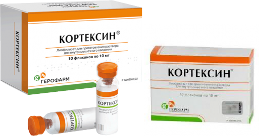
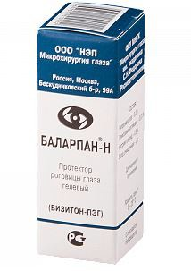
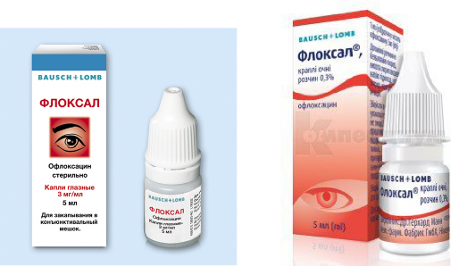

���� 1. Мексидол (Mexidol) — инъекции 2 мл

Улучшение мозгового кровообращения
Защита клеток мозга от гипоксии (нехватки кислорода)
После стрессов, травм, интоксикаций
При неврологических нарушениях, головокружениях, астении
Антиоксидант + адаптоген.
Уменьшает последствия гипоксии, улучшает работу нейронов, снижает тревожность.
Легкая сонливость или возбуждение
Сухость во рту
Аллергические реакции
Редко — давление немного снижается
���� 2. Актовегин (Actovegin) — инъекции 2 мл

Улучшение метаболизма мозга
Восстановление после нейропатий, ишемии, травм
Ускорение восстановления тканей
При слабости, утомляемости, головокружениях
Улучшает использование кислорода клетками и усиливает нервно-мышечную проводимость.
Редкие, но возможны:
Аллергия
Легкая головная боль
Жар, покраснение лица
���� 3. Кортексин (Cortexin) — 10 мг (развести в NaCl 0.9%)

Улучшение когнитивных функций (память, внимание)
Восстановление мозга после травм
При речевых задержках (у детей), астении
При нарушениях мозгового кровообращения
Нейропептиды → активируют нейроны, улучшают обучение, стимулируют мозговую активность, обладают мягким противосудорожным и успокаивающим действием.
Легкая болезненность при уколах
Аллергические реакции
Возбуждение/«бодрость» у чувствительных людей
������ 4. Баларапан-Н (Balarpan-N) — капли

Для восстановления повреждённой роговицы
После раздражения, микротравм, воспалений
При сухости и дискомфорте глаза
После воздействия раздражителей (пыль, ветер, хим. пары)
Содержит гликозаминогликаны, которые восстанавливают эпителий роговицы, уменьшают воспаление и сухость.
Редкие: покалывание, кратковременное жжение
Аллергия крайне редко
������ 5. Флоксал (Floxal) — капли

Антибактериальные капли
При конъюнктивите, дакриоцистите, воспалении века
После травм или при подозрении на бактериальную инфекцию
Офлоксацин (антибиотик) убивает бактерии, снижает воспаление, предотвращает развитие инфекции.
Легкое жжение 10–20 секунд
Слезотечение
Повышенная чувствительность к свету
Очень редко — аллергия
��� Важно:
Флоксал нельзя применять дольше 14 дней — вызывает устойчивость микробов.